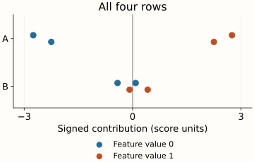
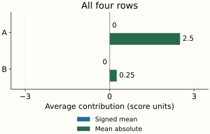

Tree SHAP for Ensembles and Global Summaries
There are two different directions in which explanations can be combined. For one row, combine tree contributions using the model’s own aggregation rule. For many rows, summarize each feature’s contributions to describe a population. Mixing those operations produces plausible-looking numbers that answer the wrong question.
We will fit a small random forest, inspect its three trees, and then reuse the same row explanations in a global plot. A separate boosted classifier shows why output units matter. The previous worked example supplies the single-tree calculation; we will use it without repeating the derivation.
A forest averages its trees—and their explanations
Fit three regression trees on the four binary inputs (A, B) with target scores 0, 2, 4, and 8. Bootstrap sampling gives the trees different training samples, so they need not reproduce the same function. The reference used to explain every tree is the same balanced set of four inputs, with replacement/interventional masking.
At (1, 1), the trees predict 8, 8, and 2. The forest predicts their mean, 6. Its explanation must average the trees’ baselines and contributions as well. Adding them without division would explain a score of 18.
| Tree | Baseline | A | B | Score |
|---|
The forest averages scores 8, 8, and 2 to predict 6.
For this row, the tree baselines are 4.5, 5, and 2: their average is about 3.8333. A’s contributions average to 2.25, and B’s to about −0.0833. Together they reconstruct 6. The small negative B term means B=1 lowers this prediction relative to the chosen reference, even though some trees give B a positive contribution.
There is no requirement that every tree use every feature. The second tree in this fitted forest uses only A, so B’s contribution is zero for every row. The forest’s B contribution comes from the other trees. The RandomForestRegressor reference defines its prediction as the mean of its trees.
Why the same rule applies to weighted sums
Write $f_m(x)$ for tree $m$’s output at row $x$, $w_m$ for its fixed weight, and $c$ for a constant model offset. There are $M$ trees. Write $\phi_j^{(m)}(x)$ for feature $j$’s contribution to tree $m$ and $\phi_j^f(x)$ for its contribution to the combined model:
Use the same feature set and reference rule throughout. Each reveal-set average is a weighted sum of tree averages; each marginal change and its reveal-order average preserve that sum. The constant contributes to the baseline. A mean forest uses weights 1/M. Boosted raw scores can include a learning-rate factor and an initial prediction; inspect the model’s actual representation before combining components. See the TreeSHAP paper’s ensemble formulation.
A classifier’s probability comes after the raw score
Now use a separate fitted binary classifier. At each input combination, give it four labeled examples; the counts of class 1 are 1, 2, 3, and 4 respectively. Fit four boosting stages. Its raw decision score is a log-odds value, which can be negative or greater than 1. A sigmoid converts the total score into a class-1 probability.
Let $s$ be the complete raw score and $p$ the resulting class-1 probability. The conversion is
For (1, 1), the raw baseline is about 0.7922, A contributes 1.3884, and B contributes 0.8768. Add first to get a score of about 3.0574; applying the sigmoid gives probability 0.9551. A’s 1.3884 is a change in log-odds, not a probability increase of 138.84 percentage points.
sigmoid(3.0574) = 0.9551 probability of class 1.
The sigmoid is nonlinear: applying it to individual contributions and adding the results does not produce the prediction. The baseline has a similar distinction. In this classifier, the mean probability across reference rows is about 0.6196, while the sigmoid of the mean raw score is about 0.6883. Averaging and applying the sigmoid are different operations.
These figures explain raw scores. If you need additive contributions in probability units, choose an explanation for that output and validate it against that output. The TreeExplainer output settings depend on the model and reference mode; raw does not universally mean log-odds for every tree library. The output-versus-outcome discussion covers the separate question of whether the prediction is useful.
Now summarize a feature across rows
Return to the regression forest and keep its model, balanced reference, and explanation mode fixed. Each row has one contribution for A and one for B. To describe a population, take a column of these row contributions and decide what you want to preserve.
The signed mean keeps direction but permits cancellation. Across all four rows, A’s contributions are −2.75, −2.25, +2.75, and +2.25. Their mean is zero. A clearly matters to these predictions; the positive and negative effects simply balance.
The mean absolute contribution takes the magnitude before averaging. For A, (2.75 + 2.25 + 2.75 + 2.25) / 4 = 2.5. This answers how large the contribution typically is, while discarding its sign. It is the common quantity in a global SHAP importance bar. A row-level dot plot keeps the spread and direction visible. SHAP’s bar-plot API supports global and cohort summaries.


All four rows: A’s signed mean is 0 and mean absolute contribution is 2.5.
{kind=link}
{kind=link}
Among A=0 rows, B’s mean absolute contribution is about 0.4167. Among A=1 rows, it is about 0.0833—a fivefold difference. We changed which row explanations were summarized. We did not recompute them with a new background or change the trained forest.
That distinction is essential in a report: the background sets the comparison for each local explanation; the summary population selects which explanations enter the global plot. Name both. A bar for last month’s traffic and a bar for one customer segment can differ for this reason. The next chapter changes the background itself.
Optional: notation for the global magnitude
Let $x_i$ be row $i$ among $N$ summarized rows, and let $\phi_j(x_i)$ be feature $j$’s contribution on that row. The mean magnitude $I_j$ is
The absolute value is inside the sum. Taking the absolute value of the signed mean would still turn A’s balanced positive and negative contributions into zero. This formula gives each summarized row equal weight; other population weights must be specified explicitly.
The reproduction script fits all models, directly enumerates the four reveal sets, compares 20 row explanations against SHAP, and exports the data and all six SVG plots. Run it beside the shared example with the pinned dependencies. These small models make the arithmetic inspectable; no predictive-performance claim is being made.
References and further reading
- RandomForestRegressor — tree averaging and fitted-estimator access.
- GradientBoostingClassifier — raw decision scores and class probabilities.
- Lundberg, Erion & Lee: TreeSHAP — tree ensemble contributions.
- TreeExplainer — output units and supported explanation modes.
- SHAP bar plots — local, global, and cohort displays.